13
Digital Signal Processing
The Arduino is capable of fairly rudimentary signal processing. This chapter discusses a variety of techniques, from conditioning a signal from an analog input using software rather than external electronics to calculating the relative magnitude of various frequencies in a signal using a Fourier Transform.
Introducing Digital Signal Processing
When you take readings from a sensor, you are measuring a signal. It is common to visualize that signal as a line (usually wavy) moving from the left of the page to the right over time. This is how electrical signals are viewed on an oscilloscope. The y-axis is the amplitude of the signal (its strength) and the x-axis is time. Figure 13-1 shows a signal in the form of music, captured over a period of just 1/4 of a second using an oscilloscope.
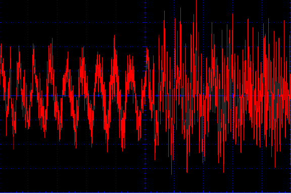
Figure 13-1 A signal from a musical source
You can see some repeating patterns in the signal. The frequency at which these patterns recur is called the frequency. This is measured in Hertz (abbreviated to Hz). A signal of 1 Hz repeats itself once every second. A signal of 10 Hz, 10 times per second. Looking at the left of Figure 13-1, you see a signal that repeats itself roughly every 0.6 of a square. As each square represents 25 milliseconds, with the settings used on the oscilloscope, the frequency of that part of the signal is 1/(0.6×0.025) = 67 Hz. If you were to zoom in using a shorter time span, you would see that many other sound component frequencies mixed in there as well. Unless a signal is pure sine wave (like the one shown later in Figure 13-5), then it will always comprise a whole load of frequencies.
You could try to capture the signal shown in Figure 13-1 using one of the Arduino’s analog inputs. This is called digitization because you are making the analog signal digital. To do this, you have to be able to take samples fast enough to get a good reproduction of the original signal.
The essence of Digital Signal Processing (DSP) is to digitize a signal using an analog-to-digital converter (ADC), manipulate it in some way, and then generate an analog output signal using a digital-to-analog converter (DAC). Most modern audio equipment, MP3 players, and cell phones use DSP, which provides equalization settings that allow you to control the relative power of the high or low frequencies in a piece of music. Sometimes, however, you don’t need the output to be a version of the input; you simply need to use DSP techniques to remove unwanted noise from a signal to get more accurate readings from a sensor.
In general, Arduinos are not the ideal devices for DSP. They cannot capture analog signals particularly fast, and their digital output is limited to PWM. The exception to this is the Arduino Due, which, as well as having lots of ADCs also has a fast processor and two true DACs. Therefore, the Due’s hardware is sufficiently good enough to stand a fighting chance of digitizing a stereo audio signal and doing something with it.
Averaging Readings
When reading from sensors, you often find that you can get better results by taking a number of readings and then averaging them. One way to do this is to use a circular buffer (Figure 13-2).
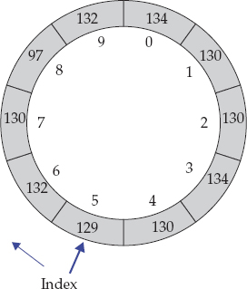
Figure 13-2 A circular buffer
Using a circular buffer arrangement, as each new reading is taken, it is added to the buffer at the current index position. When the last index position is filled, the index position is set back to zero and the old readings start being overwritten. In this way, you always keep the last N readings, where N is the size of the buffer.
The following example code implements a circular buffer:
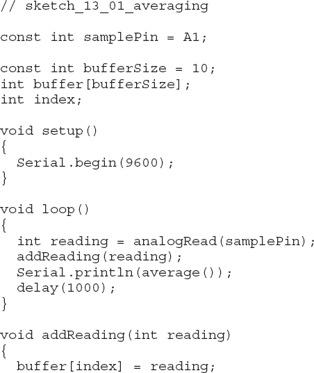
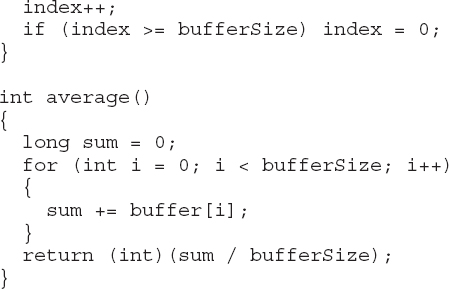
This approach produces invalid averages until the buffer has been filled. In practice, this need not be a problem as you can just ensure that you take a buffer full of readings before you start requesting the average.
Notice that the average function uses a long to contain the sum of the readings. Using a long is essential if the buffer is long enough to exceed the maximum int value of about 32,000. Note that the return value can still be an int as the average will be within the range of the individual readings.
An Introduction to Filtering
As I discussed in the section “Introducing Digital Signal Processing,” any signal is usually comprised of a wide range of different component frequencies. At times, you may want to ignore some of these frequencies, in which case you need to use filtering.
The most common type of filtering with an Arduino is probably low-pass filtering. Say you have a light sensor and you are trying to detect the overall light level and how it changes from minute to minute, for instance, to detect when it is dark enough to turn on a light. But you want to eliminate higher frequency events such as a hand momentarily passing near the sensor or the sensor being illuminated by artificial light that actually flickers considerably at the line frequency (60 Hz if you live in the United States). If you are only interested in the very slow-moving part of the signal, then you need a low-pass filter.
For the opposite effect, if you want to respond to fast-moving events but ignore the longer trend, you need a high-pass filter.
Returning to the line frequency interference problem, if, for example, you are interested in frequencies above and below the 60 Hz noise, then simply cutting off the low frequencies may not be an option. For that, you may want to use a band stop filter that just removes the component of the signal at 60 Hz or, more likely, all frequencies from 59 to 61 Hz.
Creating a Simple Low-Pass Filter
Maintaining a buffer of readings is often unnecessary if all you really want to do is smooth out the signal. Such filtering can be thought of as low-pass filtering because you are rejecting high-frequency rapid signal changing and are interested in the overall trend. You use filters like this in sensors such as accelerometers that are sensitive to high-frequency changes in the signal that you may not be interested in if you simply want to know the angle something is tilted to.
A simple-to-code and useful technique for accomplishing this relies on retaining a kind of running average between readings. This running average comprises a proportion of the current running average and a proportion of the new reading:
smoothedValuen = (alpha × smoothedValuen–1) + ((1 – alpha) × readingn)
Alpha is a constant between 0 and 1. The higher the value of alpha, the greater the smoothing effect.
This makes it sound more complicated than it is, however. The following code shows how easy it is to implement:
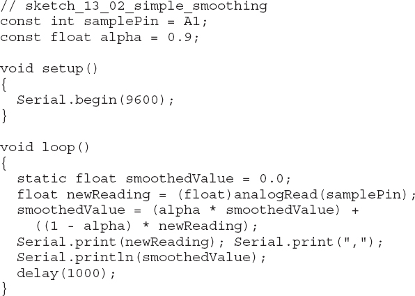
By copying and pasting the output of the Serial Monitor into a spreadsheet and then charting the result, you can see how well the smoothing is performing. Figure 13-3 shows the result of the previous code, with a short wire stuck into the top of A1 to pick up some electrical interference.
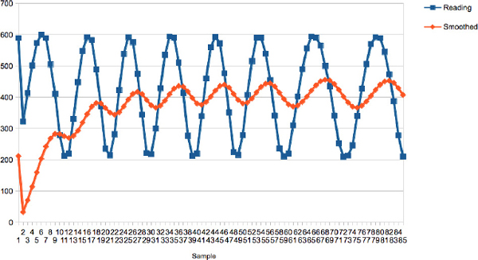
Figure 13-3 Plotting smoothed values
You can see how it takes a while for the smoothed value to catch up. If you were to increase alpha to, say, 0.95, then the smoothing would be even more pronounced. Plotting the data written to the Serial Monitor is a great way to make sure the smoothing that you are applying to your signal is what you need.
Arduino Uno DSP
Figure 13-4 shows how you can wire up an Arduino so an audio signal is fed into A0 and a PWM (10 kHz) output signal is generated. I used a smartphone app as the signal generator, and I connected the headphone output of the phone to the Arduino, as shown in Figure 13-4.
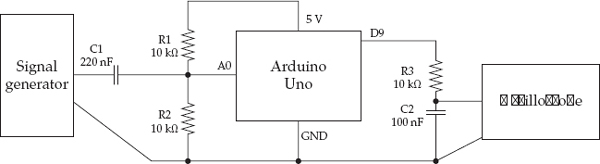
Figure 13-4 Using an Arduino Uno for DSP
CAUTION Be warned: connecting your phone in this way probably voids its warranty and could destroy your phone.
The input from the signal generator is biased using C1, R1, and R2; therefore, the oscillation is about the midpoint of 2.5V, so the ADC can read the whole signal. If these components were not there, the signal would swing below 0V for half its cycle.
I used a crude filter comprising R3 and C2 to remove most of the PWM carrier. The PWM frequency of 10 KHz is unfortunately a bit too close to the signal frequency to remove all the PWM carrier frequency easily.
As well as looking at the signal with an oscilloscope, you could also listen to it by attaching an audio amplifier, but if you connect an amplifier, make sure the input is AC coupled.
The following sketch uses the TimerOne library to both generate the PWM signal and sample the audio at 10 kHz:
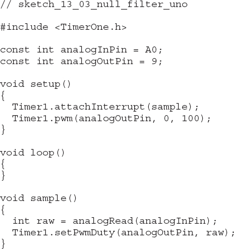
Figure 13-5 shows the input to the Arduino (top trace) and the output from the Arduino (bottom trace) of a 1 kHz signal. The signal is actually not bad up until you get to 2 to 3 kHz and then it becomes rather triangular, as you would expect with the small number of samples per waveform. You can see some of the carrier is still there as jaggedness, but overall the shape is not bad. It is certainly good enough for speech frequencies.
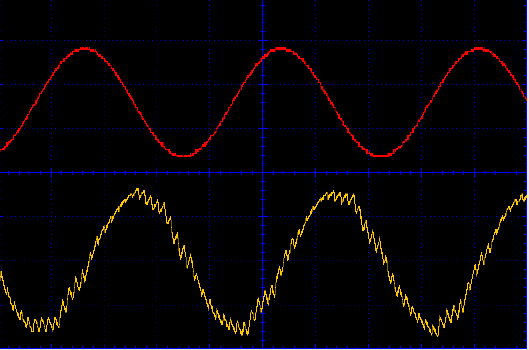
Figure 13-5 Arduino Uno signal reproduction with a signal of 1 kHz
Arduino Due DSP
Now we can carry out the same experiment using an Arduino Due at a much higher sample rate. The code used for the Uno in the previous section is of no use with the Due, which cannot use the TimerOne library and has a different architecture.
The Due analog inputs operate at 3.3V, so be sure to connect the top of R1 to 3.3V and not 5V. Because the Due has an analog output, you can dispense with the low-pass R3 and C2 filter and connect the oscilloscope directly to the DAC0 pin. Figure 13-6 shows the connections for the Due.
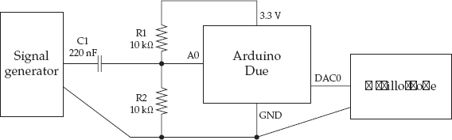
Figure 13-6 Using an Arduino Due for DSP
The following sketch uses a sample rate of 100 kHz!
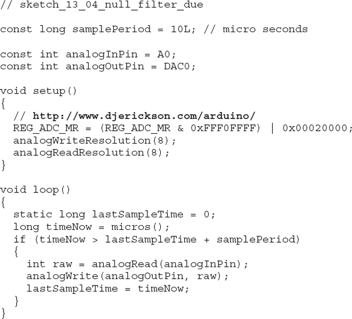
Unlike the other Arduino boards, the Arduino Due allows the resolution of both the ADC and DAC to be set. To keep things simple and fast, these are both set to 8 bits.
The following line speeds up ADC on the Due by manipulating register values. Follow the link in the code for more information on this trick.
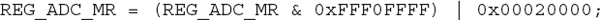
The sketch uses the micros function to control the sample frequency, only running the sampling code when enough microseconds have elapsed.
Figure 13-7 shows how the setup reproduces a 5 kHz input signal. You can see the steps in the generated signal corresponding to the 20 samples per waveform you would expect from a 100 kHz sample rate.
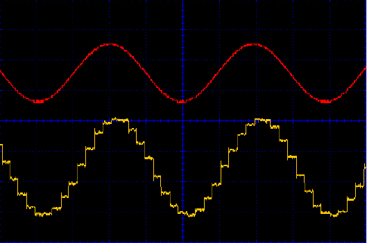
Figure 13-7 Arduino Due signal reproduction with a signal of 5 kHz
Filter Code Generation
If you are looking at more advanced filtering, there is a useful online code generator that allows you to design a filter and then cut and paste lines of code that it generates into your Arduino sketch. You will find this code here: http://www.schwietering.com/jayduino/filtuino/.
Frankly, the alternative is whole lot of painful math!
Figure 13-8 shows the interface to the filter generator. The bottom half of the screen shows the generated code, and shortly I will show you how you can incorporate this into an Arduino sketch.
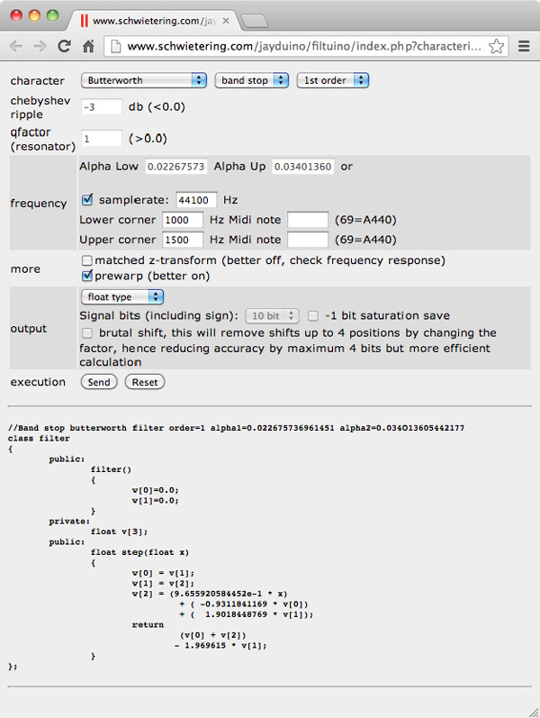
Figure 13-8 Filter code generator for Arduino
You have a bewildering array of options for the type of filter to be generated. The example shown in Figure 13-4 is a band stop filter designed to reduce the amplitude of the signal at frequencies between 1 kHz and 1.5 kHz. Starting at the top row, the settings for this are “Butterworth,” “band stop,” and “1st order.” Butterworth refers to the filter design, from its original analog electronics design (http://en.wikipedia.org/wiki/Butterworth_filter). The Butterworth is a good all round design and a good default.
I also selected the option “1st order.” Changing this to a higher number will increase both the number of previous samples that need to be stored and also the steepness of the cutoff of the unwanted frequencies. For this example, “1st order” is fine. The higher the order, the more calculations to perform and you may find that you need to reduce the sample rate for the Arduino to keep up.
Then you see some disabled fields that relate to other types of filter, until you come to “samplerate.” Samplerate is the frequency at which the data will be sampled and also the frequency at which the generated code will be called to apply the filtering to the signal.
Next, I specified the upper and lower frequencies. You can enter these as either a frequency in Hz or a MIDI note.
The “more” section provides a couple more options and even tells you how to set them for best results. The “output” section allows you to specify the type to use for the array of values that are used to do the filtering. I set this to “float.” Finally, I clicked Send to generate the code.
To test this, you can modify the “null filter” example that you ran on the Due. The full sketch can be found in sketch_13_05_band_stop_due.
The first step is to copy and paste the generated code into the basic “null filter” example just after the constant definitions. It is also a good idea to paste the URL from the generator as a comment line, so if you want to go back and modify the filter code, you’ll have the parameters you used last time preset in the user interface. The generated code encapsulates all the filter code into a class. You’ll meet classes again in Chapter 15. But, for now, you can treat it as a black box that will do filtering.
After the pasted code, you need to add the following line:
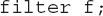
Now you need to modify the loop function, so that instead of simply outputting the input, the Arduino outputs the filtered value:
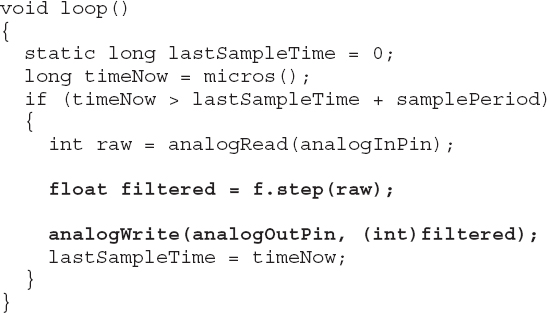
Making the filtered signal is as easy as supplying the raw reading from the analog input as argument to the function f.step. The value returned is the filtered value, which can be converted to an int before being written by the DAC.
Looking at the step function, you can see that the filter code keeps a history of three previous values along with the new value. There is some shuffling up of values and then scaling of values by factors to produce a return value. Isn’t math wonderful?
Figure 13-9 shows the result of this filtering. A signal generator was used to inject different frequency signals and the output amplitude (measured using the oscilloscope) recorded in a spreadsheet and then plotted in a chart.
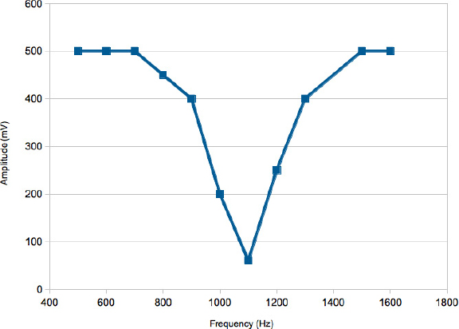
Figure 13-9 Frequency response of an Arduino band stop filter
The Fourier Transform
The Fourier Transform is a useful tool for analyzing the frequencies in a signal. As you recall from the introduction to this chapter, signals can be thought of as being made up of varying amounts of sine waves at different frequencies. You have probably seen frequency analyzer displays on musical equipment or on the visualization utilities in your favorite MP3 playing software. These analyzers display as bar charts. The vertical bars represent the relative strengths of different bands of frequencies, with the low-frequency bass notes over on the left and the high-frequency bands on the right.
Figure 13-10 shows how the same signal can be viewed both as a single wavy line (called the time domain) and a set of strengths of the signal in a set of frequency bands (called the frequency domain).
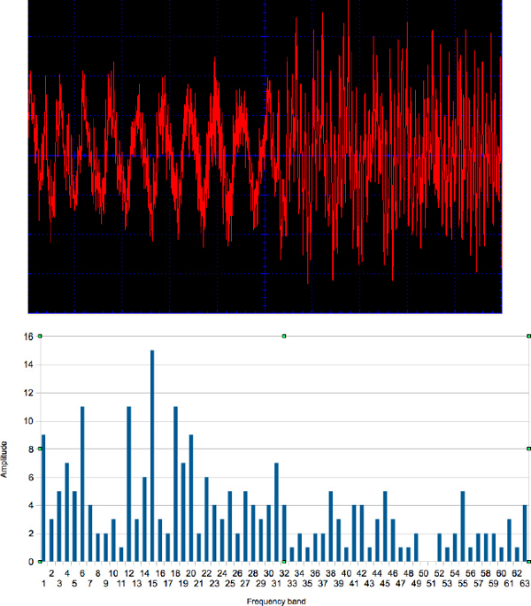
Figure 13-10 A signal in time and frequency domains
The algorithm for calculating the frequency domain from time domain signal data is called the Fast Fourier Transform or FFT. The calculations involved in FFTs use complex numbers and, unless you are really into math, are not for the faint of heart.
Fortunately for us, clever people are often happy to share their code. You can download a function that will perform the FFT algorithm for you. The sample code I used is not organized into a library; it is supplied as a C header and C++ implementation file (.h and .cpp, respectively). To use it, you can just place the two files into your sketch folder. These are in the sketches that accompany the book, so you do not need to download them. The code originally appeared in a post on the Arduino Forum (http://forum.arduino.cc/index.php/topic,38153.0.html). You can also find the two files, with other examples of the algorithm, at these websites:
The following two examples illustrate how to use code running on an Arduino Uno to sample an audio signal.
Spectrum Analyzer Example
This example uses an Arduino Uno to make a text-based frequency spectrum display. You can find the example in sketch_13_06_FFT_Spectrum. The sketch is a little long to repeat here in full, so I’ve only included snippets. Load the sketch into your Arduino IDE to follow the discussion.
The FFT algorithm uses two arrays of char. This type is used rather than byte, because in Arduino C, byte is unsigned, and the signal to be converted is expected to oscillate about a value of 0. Once the FFT algorithm has been applied, the data array will contain the strengths of each component frequency band from lower to higher. The frequency range depends on the sample speed. This sketch lets the Uno run as fast as possible without any consideration for accuracy and gives a top frequency of about 15 kHz, since there are 63 slots giving evenly spaced frequency bands about 240 Hz apart.
To make the analog conversion as fast as possible and get a decent sample rate, use the trick discussed in Chapter 4 to increase the speed of the ADC. This accounts for these two lines in setup.
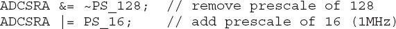
The main loop doesn’t contain much code:
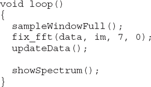
The function sampleWindowFull samples a time window of 128 samples worth of data. I’ll discuss this in a moment. The FFT algorithm is then applied. The parameter of 7 is the base 2 logarithm of the number of samples. This value will always be 7. The parameter of 0 is an inverse flag, which will also always be set to 0 for false. After the FFT algorithm has been applied, there is a further step to update the values in the arrays. Finally showSpectrum is called to display the frequency data.
The function sampleWindowFull reads 128 analog values and assumes that the signal is biased to 2.5V, so that by subtracting 512 from the reading, the signal will swing both positive and negative. This is then scaled by the constant GAIN to add a little amplification for weak signals. The 10-bit reading is then converted into an 8-bit value to fit into the char array by dividing it by 4. The im array containing the imaginary component of the signal is set to 0. This is part of the inner workings of the algorithm; if you want to find out more about this, see http://en.wikipedia.org/wiki/Fast_Fourier_transform.
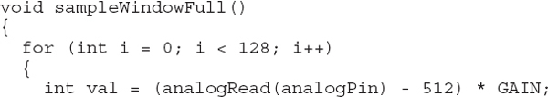
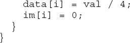
The updateData function calculates the amplitude of each frequency slot. The strength of the signal is the hypotenuse of the right-angle triangle whose other sides are the real and imaginary parts of the signal (Pythagoras’s Theorem in action!).
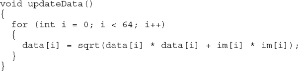
To display the data, it is written to the Serial Monitor, which places the whole data set on one line, with commas between the values. The first value is ignored, as this contains the DC component of the signal and is not usually of interest.
You could, for example, use the data array to control the height of graphical bars on an LCD display. To connect a signal (say, the audio output of an MP3 player), you would need the same type of arrangement as shown previously in Figure 13-4 so the signal is biased around 2.5V.
Frequency Measurement Example
This second example uses an Arduino Uno to display the approximate frequency of a signal in the Serial Monitor (sketch_13_07_FFT_Freq). Most of the code is the same as for the previous example. The main difference is that once the data array has been calculated, the index position of its highest value is used to calculate an estimate of the frequency. The loop then displays this value in the Serial Monitor.
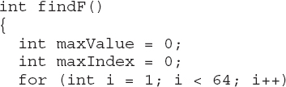
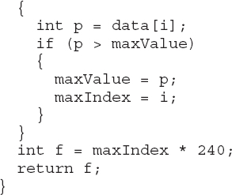
Summary
DSP is a complex subject, and there are many books devoted just to this topic alone. This complexity means that, by necessity, I’ve only touched on what are hopefully the more useful and possible techniques that you might try with an Arduino.
In the next chapter, we turn our attention to dealing with the problem of wanting to do more than one thing at a time with the Arduino. This is a particular problem for those of us used to programming larger machines, where multiple simultaneous threads of execution are the norm.